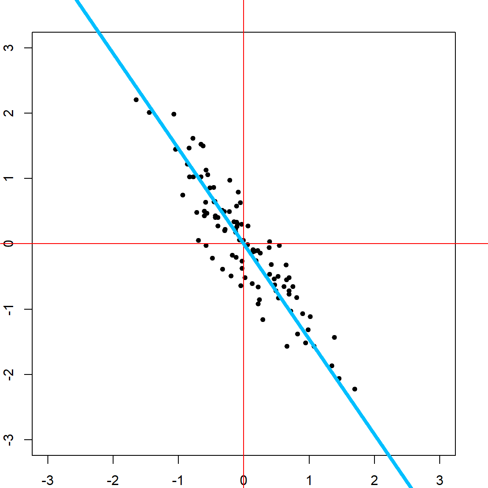
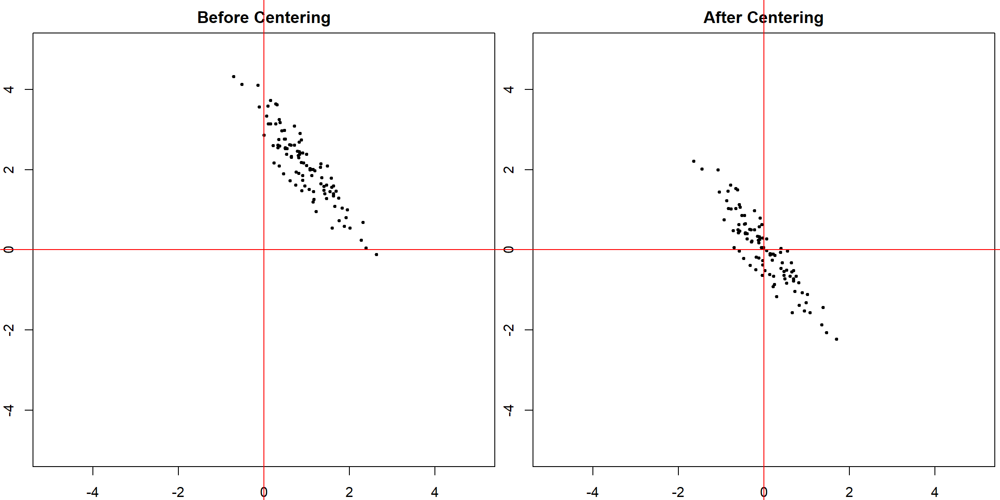
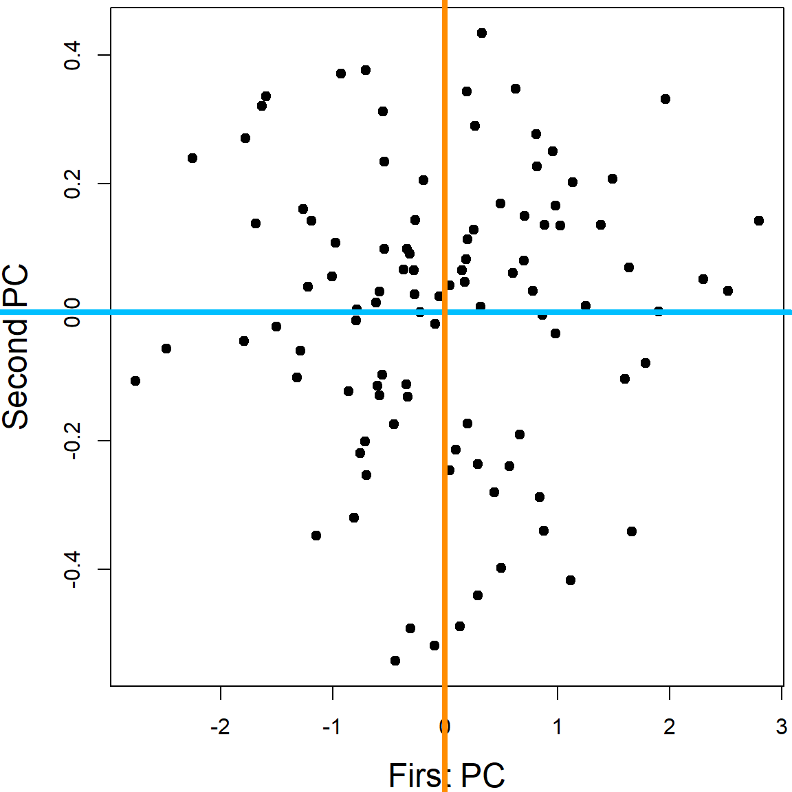
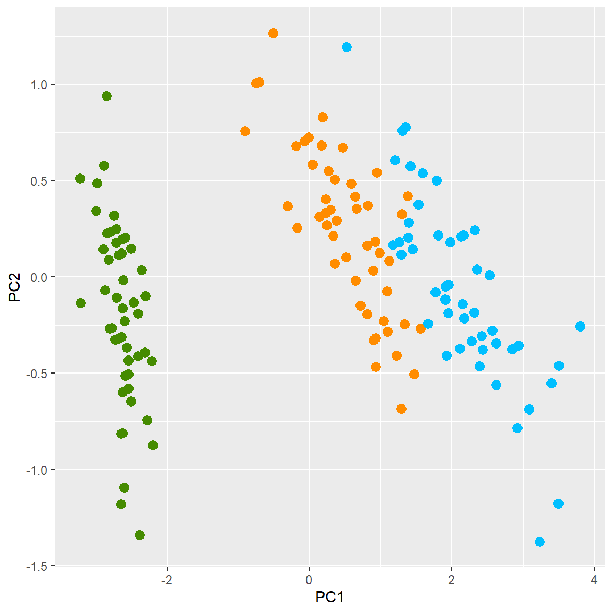
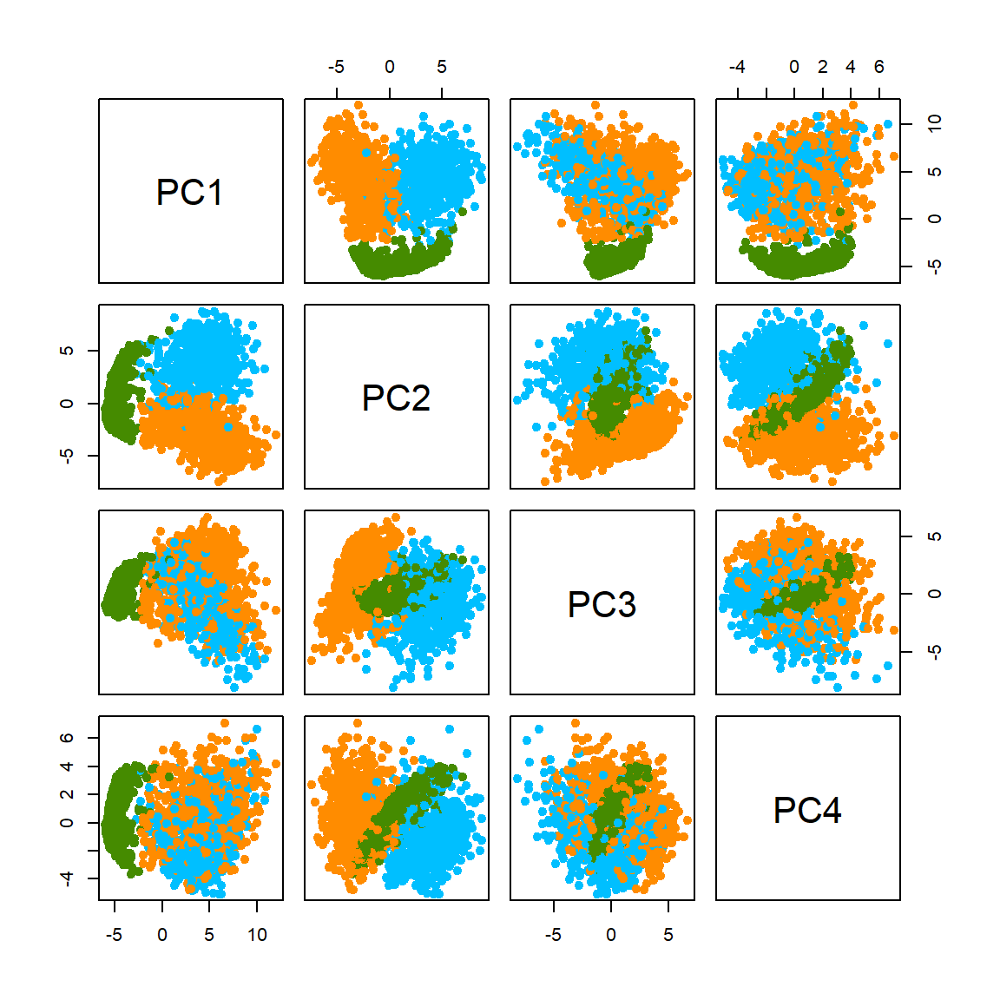
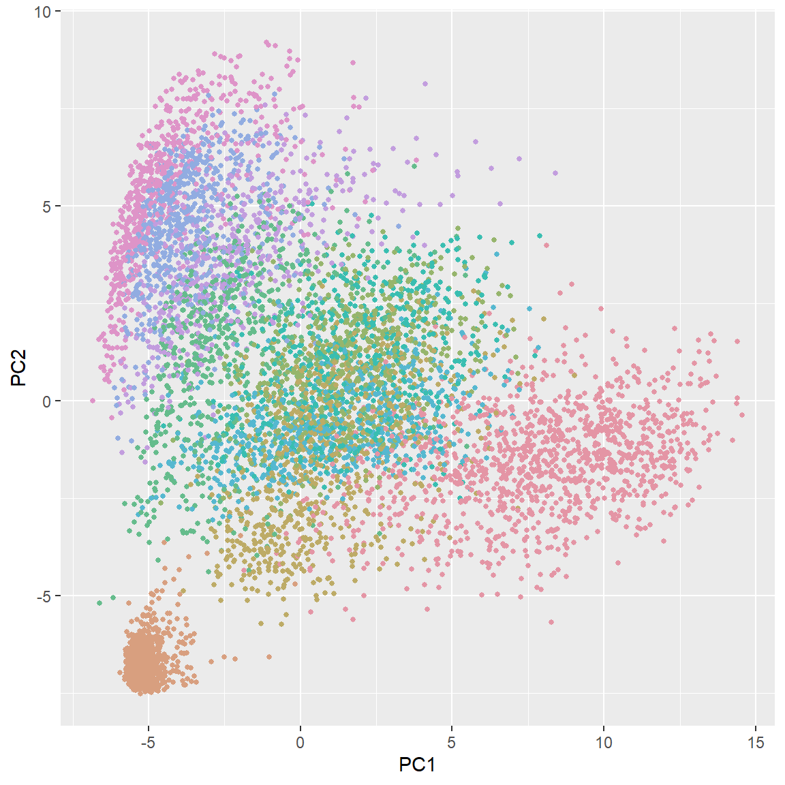

Chapter 26 Principal Component Analysis
26.1 Basic Concepts
Principal Component Analysis (PCA) is arguably the most commonly used approach for dimension reduction and visualization. The idea is to capture major signals of variation in a dataset. A nice demonstration of the search of direction is provided at this r-bloggers site:

Let’s look at a two-dimensional case, we are trying to find a line (direction) on this plain, such that if all points are projected onto this line, their coordinates have the largest variance, compared with any other line. The following code is used to generate a set of observations.
# generate some random data from a 2-dimensional normal distribution.
library(MASS)
set.seed(1)
n = 100
Sigma = matrix(c(0.5, -0.65, -0.65, 1), 2, 2)
x_org = mvrnorm(n, c(1, 2), Sigma)
x = scale(x_org, scale = FALSE, center = TRUE) plot(x, xlim = c(-3, 3), ylim= c(-3, 3),
pch = 19, cex = 0.75)
abline(h = 0, col = "red")
abline(v = 0, col = "red")
Let’ start with finding a direction to project all the observations onto. And we want this projection to have the largest variation. Of course the direction that goes along the spread of the data would be the best choice for the purpose of large variance.
plot(x, xlim = c(-3, 3), ylim= c(-3, 3), pch = 19, cex = 0.75)
abline(h = 0, col = "red")
abline(v = 0, col = "red")
# This line is obtained from performing PCA
pc1 = princomp(x)$loadings[,1]
abline(a = 0, b = pc1[2]/pc1[1], col = "deepskyblue", lwd = 4)
Once we have the first direction, we can also remove the projection from the original covariates, and search for a direction \(\mathbf{v}_2\) that is orthogonal to \(\mathbf{v}_1\), with \(\mathbf{v}_1^\text{T}\mathbf{v}_2 = 0\), such that it contains large variation of \(\mathbf{X}\).
par(mar=c(2, 2, 0.3, 0.3))
plot(x, xlim = c(-3.5, 3.5), ylim= c(-3.5, 3.5), pch = 19, cex = 0.5)
abline(h = 0, col = "red")
abline(v = 0, col = "red")
# largest PC
pc1 = princomp(x)$loadings[,1]
abline(a = 0, b = pc1[2]/pc1[1], col = "deepskyblue", lwd = 4)
# second largest PC
pc2 = princomp(x)$loadings[,2]
abline(a = 0, b = pc2[2]/pc2[1], col = "darkorange", lwd = 3)We can also see how much variation these two directions accounts for in the original data. The following shows the corresponding standard deviation.
Formally, we can generalized this to \(\mathbf{X}\) with any dimensions. And the key tool is to perform the singular value decomposition (SVD):
\[\mathbf{X}= \mathbf{U}\mathbf{D}\mathbf{V}^\text{T}\] The \(\mathbf{V}\) matrix here corresponds to the directions we found. Hence, \(\mathbf{v}_1\) is its first column, \(\mathbf{v}_1\) is its second column, etc.. \(\mathbf{D}\) is a diagonal matrix ordered from the largest to the smallest values, correspond to the standard deviation of the spreads. And \(\mathbf{U}\) represents the coordinates once we project \(\mathbf{X}\) onto those directions. An alternative way to understand this is by matrix approximation, if we want to find a rank-1 matrix that best approximate \(\mathbf{X}\) with the Frobenius norm, we optimize
\[\text{minimize} \quad \lVert \mathbf{X}- \mathbf{u}_1 d_1 \mathbf{v}_1^\text{T}\rVert_2^2\]
This can be generalized into any dimensional problem. Another alternative formulation is to use eigen-decomposition of \(\mathbf{X}^\text{T}\mathbf{X}\), which can be written as
\[\mathbf{X}^\text{T}\mathbf{X}= \mathbf{V}\mathbf{D}\mathbf{U}^\text{T}\mathbf{U}\mathbf{D}\mathbf{V}^\text{T}= \mathbf{V}\mathbf{D}^2 \mathbf{V}^\text{T}\]
But one thing we usually need to take care of is the centering issue. This is why we used scale() function at the beginning. However, we only center, but not scale the data. If we do not center, then the first principal component (PC) could be a direction that points to the center of the data. Note that when \(\mathbf{X}\) is already centered, \(\mathbf{X}^\text{T}\mathbf{X}\) is the covariance matrix. Hence PCA is also performing eigen-decomposition to the covariance matrix.
plot(x_org, main = "Before Centering",
xlim = c(-5, 5), ylim= c(-5, 5), pch = 19, cex = 0.5)
abline(h = 0, col = "red")
abline(v = 0, col = "red")
par(mar=c(2, 2, 2, 0.3))
plot(x, main = "After Centering",
xlim = c(-5, 5), ylim= c(-5, 5), pch = 19, cex = 0.5)
abline(h = 0, col = "red")
abline(v = 0, col = "red") 
Finally, for any dimensional data \(\mathbf{X}\), we usually visualize them in the first two directions, or three. Note that the coordinates on the PC’s can be obtained using either the scores (\(\mathbf{U}\)) in the fitted object of princomp, or simply multiply the original data matrix by the loading matrix \(\mathbf{V}\).
pcafit <- princomp(x)
# the new coordinates on PC's
head(pcafit$scores)
## Comp.1 Comp.2
## [1,] 0.88434533 0.13503607
## [2,] -0.08990294 -0.01851954
## [3,] 1.13589963 0.20234582
## [4,] -1.78763374 -0.04571218
## [5,] -0.26536435 0.14271170
## [6,] 1.11779894 -0.41759594
# direct calculation based on projection
head(x %*% pcafit$loadings)
## Comp.1 Comp.2
## [1,] 0.88434533 0.13503607
## [2,] -0.08990294 -0.01851954
## [3,] 1.13589963 0.20234582
## [4,] -1.78763374 -0.04571218
## [5,] -0.26536435 0.14271170
## [6,] 1.11779894 -0.41759594
# visualize the data on the PCs
# Note that the both axies are scaled
par(mar=c(4, 4.2, 0.3, 0.3))
plot(pcafit$scores[,1], pcafit$scores[,2], xlab = "First PC", ylab = "Second PC", pch = 19, cex.lab = 1.5)
abline(h = 0, col = "deepskyblue", lwd = 4)
abline(v = 0, col = "darkorange", lwd = 4)
There are many different functions in R that performs PCA. princomp and prcomp are the most popular ones.
26.1.1 Note: Scaling
You should always center the variables when performing PCA, however, whether to use scaling (force each variable to have a standard deviation of 1) depends on the particular application. When you have variables that are extremely disproportionate, e.g., age vs. RNA expression, scaling should be used. This is to prevent some variables from dominating the PC loadings due to their large scales. When all the variables are of the similar type, e.g., color intensities of pixels in a figure, it is better to use the original scale. This is because the variables with larger variations may carry more signal. Scaling may lose that information.
26.2 Example 1: iris Data
We use the iris data again. All four variables are considered in this analysis. We plot the first and second PC directions.
iris_pc <- prcomp(iris[, 1:4])
library(ggplot2)
ggplot(data = data.frame(iris_pc$x), aes(x=PC1, y=PC2)) +
geom_point(color=c("chartreuse4", "darkorange", "deepskyblue")[iris$Species], size = 3)
One may be interested in plotting all pair-wise direction to see if lower PC’s provide useful information.
However, usually, the lower PC’s are less informative. This can also be speculated from the eigenvalue plot, which shows how influential each PC is.
Feature contributions to the PC can be accessed through the magnitude of the loadings. This table shows that Petal.Length is the most influential variable on the first PC, with loading \(\approx 0.8567\).
iris_pc$rotation
## PC1 PC2 PC3 PC4
## Sepal.Length 0.36138659 -0.65658877 0.58202985 0.3154872
## Sepal.Width -0.08452251 -0.73016143 -0.59791083 -0.3197231
## Petal.Length 0.85667061 0.17337266 -0.07623608 -0.4798390
## Petal.Width 0.35828920 0.07548102 -0.54583143 0.7536574We can further visualize this on a plot. This can be helpful when the number of variables is large.
features = row.names(iris_pc$rotation)
ggplot(data = data.frame(iris_pc$rotation), aes(x=PC1, y=PC2, label=features,color=features)) +
geom_point(size = 3) + geom_text(size=3)
26.3 Example 2: Handwritten Digits
The handwritten zip code digits data contains 7291 training data and 2007 testing data. Each image is a \(16 \times 16\)-pixel gray-scale image. Hence they are converted to a vector of 256 variables.
library(ElemStatLearn)
# Handwritten Digit Recognition Data
# the first column is the true digit
dim(zip.train)
## [1] 7291 257Here is a sample of some images:
Let’s do a simpler task, using just three letters: 1, 4 and 8.
zip.sub = zip.train[zip.train[,1] %in% c(1,4,8), -1]
zip.sub.truth = as.factor(zip.train[zip.train[,1] %in% c(1,4,8), 1])
dim(zip.sub)
## [1] 2199 256
zip_pc = prcomp(zip.sub)
plot(zip_pc, type = "l", pch = 19, main = "Digits 1, 4, and 8: PCA Variance")The eigenvalue results suggest that the first two principal components are much more influential than the rest. A pair-wise PC plot of the first four PC’s may further confirm that speculation.

Let’s look at the first two PCs more closely. Even without knowing the true class (no colors) we can still vaguely see 3 clusters.
Finally, let’s briefly look at the results of PCA for all 10 different digits. Of course, more PC’s are needed for this task. You can also plot other PC’s to get more information.
library(colorspace)
zip_pc <- prcomp(zip.train)
plot(zip_pc, type = "l", pch = 19, main = "All Digits: PCA Variance")
ggplot(data = data.frame(prcomp(zip.train)$x), aes(x=PC1, y=PC2)) +
geom_point(color = rainbow_hcl(10)[zip.train[,1]+1], size = 1)